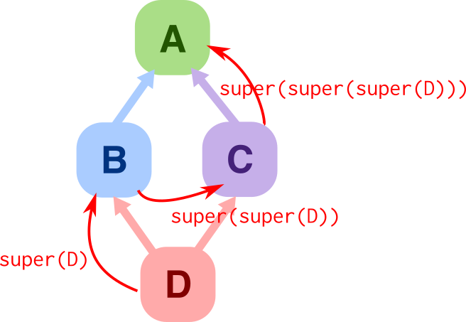

a presention brought to you by
Juan Pedro
Bolivar Puente
and Ableton
- Python got multiple inheritance right
- Methods that call super() are cooperative
- They make classes compose
- They enable mixins, aspects, decorators (GoF)
B.__mro__ == [
,
]
__mro__ = method resolution order
C.__mro__ == [
,
]
__mro__ = method resolution order

D.__mro__ == [
,
,
,
]
class Foo(object):
def __init__(self, param):
self._thing = param
class Foo(object):
def __init__(self, param):
object.__init__(self)
self._thing = param
class Foo(object):
def __init__(self, param):
super(Foo, self).__init__()
self._thing = param
class Foo(object):
def __init__(self, param=None, *a, **k):
super(Foo, self).__init__(*a, **k)
self._thing = param
class Foo(object):
def __init__(self, param=None, *a, **k):
super(Foo, self).__init__(*a, **k)
self._thing = param
UNFRIENDLY, ACKWARD, ERROR-PRONE, HARD TO DEBUG
class Foo(Cooperative):
@cooperate
def __init__(self, param=None):
self._thing = param
- Overrides must cooperate, or error
- Enforces correct signatures
- Supports abstract methods
class Text(Cooperative):
@cooperate
def __init__(self, text=None):
self._text = text
class WithBorder(Cooperative):
@cooperate
def __init__(self, border=None):
self._border = border
class TextWithBorder(Text, WithBorder): pass
x = TextWithBorder(text='cool', border=10)
assert x._text == 'cool' && x._border == 10
class Text(Cooperative):
@cooperate
def __init__(self, text=None):
self._text = text
class WithBorder(Cooperative):
@cooperate
def __init__(self, border=None):
self._border = border
x = mixin(Text, WithBorder)(text='cool', border=10)
assert x._text == 'cool' && x._border == 10
class Foo(Cooperative):
@post_cooperate
def __del__(self):
flush_toilet()
class Foo(Cooperative):
@inner_cooperate
def update(self, next):
next(param = compute_stuff())